Печатные издания, посвященные FreeBSD
 |
Руководство по FreeBSD содержит более обширную библиографию.
Щёлкните на любой картинке, чтобы увидеть укрупнённое изображение.
Книги
 |
Книга Тацуми Хосокавы (Tatsumi Hosokawa) и других. В Японии она является бестселлером среди книг о компьютерах, ее продажи превышали продажи книги Билла Гейтса "Дорога в будущее" в момент выхода из печати (последняя находилась на втором месте, а книга о FreeBSD на первом). |
 |
(Японская книга по FreeBSD с версией 2.0.5, озаглавленная "FreeBSD: Fun and easy Installation" (Установка FreeBSD: Просто и увлекательно) ) |
 |
(Японская книга по FreeBSD с версией 2.0.5, озаглавленная "FreeBSD Introductory Kit" (Вводный курс во FreeBSD) ) |
 |
Это книга "FreeBSD Complete", издаваемая BSDi с руководством по установке, страницами Справочника и установочными компакт-дисками внутри. |
 |
Эта книга была недавно (начало 1997) издана в Тайване. Она озаглавлена "FreeBSD: introduction and applications" (FreeBSD: Введение и использование), автором является Jian-Da Li. |
 |
Это "Getting Started with FreeBSD" (Изучаем FreeBSD) от Fuki-Shuppan. В отличие от обычного в таких случаях руководства по установке и настройке на японский язык, здесь уделено большое внимание администрированию и описанию работы системы на низком уровне (например, процесс загрузки и тд.). На компакт-диске находятся FreeBSD-2.2.2R и XFree86-3.2. 264 страниц, 3,400 йен. |
 |
Книга "Personal Unix Starter Kit - FreeBSD" от ASCII. Включает историю развития UNIX(R), руководство по построению японоязычной системы подготовки документов и созданию портов. На компакт-диск помещены 2.1.7.1R и Free86-3.2. 384 страниц, 3,000 йен. |
 |
BSD mit Methode, M. Schulze, B. Roehrig, M. Hoelzer und andere, C&L Computer und Literatur Verlag, 1998, 850 страниц. 2 компакт-диска, FreeBSD 2.2.6, NetBSD 1.2.1 и 1.3.2, OpenBSD 2.2 и 2.3. DM 98,-. |
| 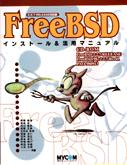 | Это книга "FreeBSD Install and utilization manual" от Mainichi Communications. Содержит общее введение во FreeBSD от установки до использования и устранения неполадок под патронажем группы пользователей в Японии. На компакт-диске находятся 2.2.7-RELEASE FreeBSD(98)2.2.7-Rev01 PAO и архивы исходных текстов портов. 472 страниц, 3,600 йен. |
| 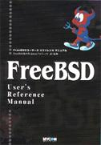 | "Справочное Руководство по FreeBSD" от Mainichi Communications, под контролем проекта "jpman project" перевода Справочника группой пользователей в Японии. Японская редакция раздела 1 Справочника FreeBSD. На компакт-диске находятся 2.2.7-RELEASE FreeBSD(98)2.2.7-Rev01 и PAO. 1,040 страниц, 3,800 йен. |
| 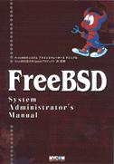 | Книга "FreeBSD System Administrator's Manual" от Mainichi Communications, под контролем проекта "jpman project" перевода Справочника группой пользователей в Японии. Японская редакция разделов 5 и 8 Справочника FreeBSD. 756 страниц, 3,300 йен. |
| 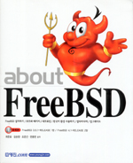 | Это книга "О FreeBSD" от Youngjin.com. Это первая книга посвященная FreeBSD вышедшая в Корее. Она рассматривает множество тем от инсталляции до настройки Корейской локализации. 3.5.1-RELEASE/PAO и 4.1-RELEASE на 3 CDROM-ах. 788 страниц, 26,000 вон. |
 |
Onno W Purbo, Dodi Maryanto, Syahrial Hubbany, Widjil Widodo: Building Internet Server with FreeBSD (на индонезийском языке), издана компанией Elex Media Komputindo, 2000. |
 |
The FreeBSD Handbook 1st Edition представляет собой исчерпывающий справочник и пособие по FreeBSD. Здесь описана установка, повседневное использование FreeBSD и много всего ещё. April 2000, BSDi. ISBN 1-57176-241-8 |
| 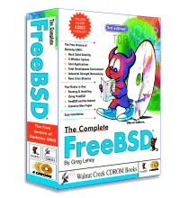 | The Complete FreeBSD with CDs, 3rd Ed, FreeBSD 4.2. Всё, что вы захотите узнать о том, как установить и работать с FreeBSD на вашем компьютере. Прилагаются 4 компакт-диска с операционной системой FreeBSD! Дата выпуска: Ноябрь 2000 ISBN: 1-57176-246-9 |
 |
The FreeBSD Handbook 2nd Edition представляет собой исчерпывающий справочник и пособие по FreeBSD. Здесь описана установка, повседневное использование FreeBSD и много всего ещё. November 2001, Wind River Systems. ISBN 1-57176-303-1 |
 |
"The FreeBSD Corporate Networker's Guide" Mittelstaedt, Ted.
Addison Wesley, 2000. Существуют два тиража: в первый включен диск 1 от FreeBSD 4.2, во второй включен диск 1 от FreeBSD 4.4. 400 страниц. Перевод на японский был опубликован в 2001 году. The Networker's Guide описывает интеграцию FreeBSD в типичные корпоративные сети с особым упором на взаимодействие с Windows 95/98/ME/NT/2K. Английская версия: 2000, Addison Wesley. ISBN 0-201-70481-1 Японская версия: 2001, Pearson Education Japan. ISBN 4-89471-464-7 |
 |
"FreeBSD, An Open-Source Operating System for Your Personal Computer",
Annelise Anderson. Знакомство с FreeBSD для пользователей, являющихся новичками как в мире FreeBSD, так и UNIX. К книге приложен установочный CD-ROM с версией 4.4, и она всё, что нужно знать об установке системы и стороннего программного обеспечения; работа со звуком, X Window, сетью и печатью; построение собственного ядра и обновление системы. Second Edition. Декабрь 2001, The Bit Tree Press. ISBN 0-9712045-1-9 |
 |
Absolute BSD. Эта книга посвящена управлению серверами FreeBSD в корпоративной среде. Июнь 2002, No Starch Press. ISBN 1-886411-74-3 |
 |
Fultus
представляет FreeBSD Open Documentation Library. Это
полностью современный набор документации FreeBSD, доступный
в режиме онлайн в разделе Технической Литературы
библиотеки Fultus eLibrary и Fultus Online Book Superstore в следующих форматах:
Прочтите о FreeBSD eBooks и сгрузите примеры со страницы FreeBSD Documentation на сайте Fultus. |
{kind=link}
{kind=link}
{kind=link}
{kind=link}
Компакт-диски
Подробная информация о последних релизах находится на Информационной странице о релизах FreeBSD. |
Это BSDisc от фирмы InfoMagic, содержащий FreeBSD 2.0 и NetBSD 1.0 на одном CD. Это единственный диск, который имеет оформление. |
 |
Это оригинальный релиз 4.4 BSD Lite2 от UC Berkeley, которая составляет основу FreeBSD. |
 |
Первый из серии дисков "BSD" от Laser5. Содержит FreeBSD-2.0.5R, NetBSD-1.0, XFree86-3.1.1 и ядро FreeBSD(98). |
 |
Второй из серии дисков "BSD" от Laser5. Начиная с этой версии, компакт-диски вкладываются в стандартную коробочку. Содержит FreeBSD-2.1R, NetBSD-1.1, XFree86-3.1.2 и 3.1.2A, а также ядро FreeBSD(98) (2.0.5). |
| 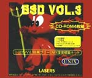 | Это японская редакция FreeBSD CDROM от Laser5. Это набор из 4 компакт-дисков. |
 |
Это единственный диск с FreeBSD, который был выпущен Pacific Hitech до того, как объединил свою линию продуктов с Walnut Creek CDROM. PHT теперь также выпускает компакт-диск FreeBSD/J (Japanese). |
| 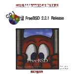 | Это диск с обложки Корейского журнала. Отметьте художественность оформления! На компакт-диске находится релиз FreeBSD 2.2.1 с некоторыми местными добавлениями. |
 |
Вот он - самый первый компакт-диск с FreeBSD! И Проект FreeBSD, и Walnut Creek CDROM были достаточно молоды тогда, и вы без труда уловите разницу в качестве продукта тогда и сейчас. |
| 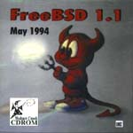 | Это был второй компакт-диск с FreeBSD, изданный фирмой Walnut Creek CDROM и также самый последний в ветви 1.x (из-за иска USL/Novell и решения суда). Следующий релиз FreeBSD 1.1.5 был доступен только в сети. |
 |
Этот необычный компакт-диск представляет находку для коллекционера, тем более, что все существующие диски были отслежены и уничтожены. Из-за неудачное оформления дик был датирован не тем годом, а месяц "January" (Январь) был неправильно написан как "Jaunary", чтобы усилить фактор удивления. Вот они, последствия включения чей-то картинки всего за час до выступления на выставке. |
 |
Это исправленная версия компакт-диска с FreeBSD 2.0. Заметьте, что в исправленной версии был изменен используемый набор цветов, что является необычным для исправленной версии и наверное, это было сделано, чтобы дистанцироваться от сделанной ранее ошибки. |
| 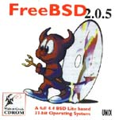 | Релиз FreeBSD 2.0.5 на компакт-диске. Это был первый компакт-диск с даемоном, нарисованным Татсуми Хосокавой (Tatsumi Hosokawa). |
 |
Релиз FreeBSD 2.1 на компакт-диске. Это был первый компакт-диск из ветки 2.1 (а последним был 2.1.7). |
 |
Релиз FreeBSD 2.1.5 на компакт-диске. |
 |
Релиз FreeBSD 2.1.6 на компакт-диске. |
 |
Японская версия 2.1.6. Это был первый и последний локализованный для Японии диск, выпущенный WC, ответственность за этот продукт затем была передана команде под руководством Tatsumi Hosokawa и спонсируемой Pacific Hitech и Laser5. |
 |
Релиз FreeBSD 2.1.7 на компакт-диске. Это последний компакт-диск из ветки 2.1.x. В основном сделан как исправление недочетов в безопасности 2.1.6. |
 |
Ранний снэпшот-релиз 2.2 (сделанный до выхода релиза 2.2.1). |
 |
Релиз FreeBSD 2.2.1 на компакт-диске. Это был первый диск в ветке 2.2. |
 |
Релиз FreeBSD 2.2.2 на компакт-диске. |
| 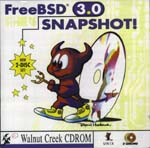 | Компакт-диск со снэпшотом FreeBSD 3.0. |
 |
Архивы списков рассылки и телеконференций, преобразованные в формат HTML и наполовину проиндексированные по темам обсуждений. Выпуск этого диска был осуществлен два раза, а затем был приостановлен после того, как оказалось, что информации слишком много, чтобы она смогла поместиться на одном диске. Может быть, когда диски DVD станут более популярными... |
| 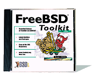 | FreeBSD Toolkit: Набор из шести дисков для более глубокого ознакомления с FreeBSD. |
| 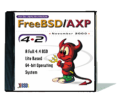 | FreeBSD Alpha 4.2 - Полная версия 64-разрядной операционной системы UNIX для платформы DEC Alpha. |
| 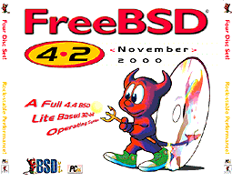 | FreeBSD 4.2: Полная версия 32-разрядной операционной системы UNIX для PC. |
| 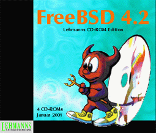 | FreeBSD 4.2 CD-ROM. Lehmanns CD-ROM Edition. Январь 2001, 4 компакт-диска. Lehmanns Fachbuchhandlung. Germany. ISBN 3-931253-72-4. |
 |
FreeBSD 4.3 RELEASE CDROM. April 2001, Wind River Systems. ISBN 1-57176-300-7. |
 |
FreeBSD Toolkit: Набор из шести дисков с материалами, которые помогут расширить ваши знания о FreeBSD. June 2001, Wind River Systems. ISBN 1-57176-301-5. |
 |
FreeBSD 4.4 CD-ROM. Lehmanns CD-ROM Edition. Ноябрь 2001, 6 компакт-дисков в Jewel-коробке. Lehmanns Fachbuchhandlung. Germany. ISBN 3-931253-84-8. |
 |
FreeBSD 4.4 RELEASE CDROM. Wind River Systems. September 2001. ISBN 1-57176-304-X. |
 |
FreeBSD 4.5 RELEASE CDROM. February 2002, FreeBSD Mall Inc. ISBN 1-57176-306-6. |
{kind=link}
{kind=link}
{kind=link}
{kind=link}
{kind=link}
Журналы
 |
Обложка корейского журнала UNIX magazine, номер за Май 1997. На прилагаемом CD находится FreeBSD 2.2.1. |
 |
UNIX User Magazine, номер за Ноябрь 1996. На прилагаемом CD находится FreeBSD 2.1.5. |
| 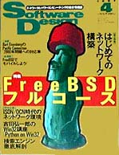 | Это специальный выпуск "FreeBSD Full Course" за Апрель 1997 журнала Software Design (издаваемого Gijutsu Hyoron Sha). Это 80 страниц статей о FreeBSD, касающихся всего от установки до следования -current. |
 |
Quality Unix for FREE, Бретта Глэсса (Brett Glass) в Sm@rt Reseller Online Сентябрь 1998 |
| 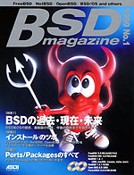 | Это журнал "BSD magazine", издаваемый компанией ASCII, первое в мире издание, специализирующееся на BSD. BSD magazine посвящён FreeBSD, NetBSD, OpenBSD и BSD/OS. В первый номер вошли статьи по истории BSD, установке и о портах/пакаджах; в него вложены 4 компакт-диска с FreeBSD 3.2-RELEASE, NetBSD 1.4.1 и OpenBSD 2.5. |
{kind=link}
{kind=link}